การใช้งานโมดูล ESP01S (ESP8285) WiFi-Serial สำหรับบอร์ด Raspberry Pi Pico#
Keywords: WiFi-to-Serial Module, EPS8266 / ESP8285, ESP-AT, Raspberry Pi, RP2040, Arduino, WiFiEspAT
บทความนี้นำเสนอการใช้งานโมดูล ESP01S ร่วมกับบอร์ด Raspberry Pi Pico ที่ใช้ชิป RP2040 SoC และมีโค้ดตัวอย่างเพื่อนำไปใช้กับซอฟต์แวร์ Arduino IDE และ Arduino RP2040 Core แนะนำให้ศึกษาการใช้งานได้จากบทความภาษาไทยที่เกี่ยวข้องต่อไปนี้
- "การใช้งาน Arduino IDE + Arduino RP2040 Core สำหรับบอร์ด Raspberry Pi Pico"
- "การติดตั้งเฟิร์มแวร์ ESP-AT สำหรับโมดูล ESP01 / ESP01S"
▷ โมดูล ESP01 / ESP01S#
โมดูล ESP01 / ESP01S ใช้ชิป ESP8266EX และ ESP8285 ตามลำดับ และมีชิปหน่วยความจำแฟลชเป็นแบบ SPI Flash (หรือรวมไว้ในชิปเดียวกัน) โดยทั่วไป โมดูลมีความจุของแฟลช 1MB
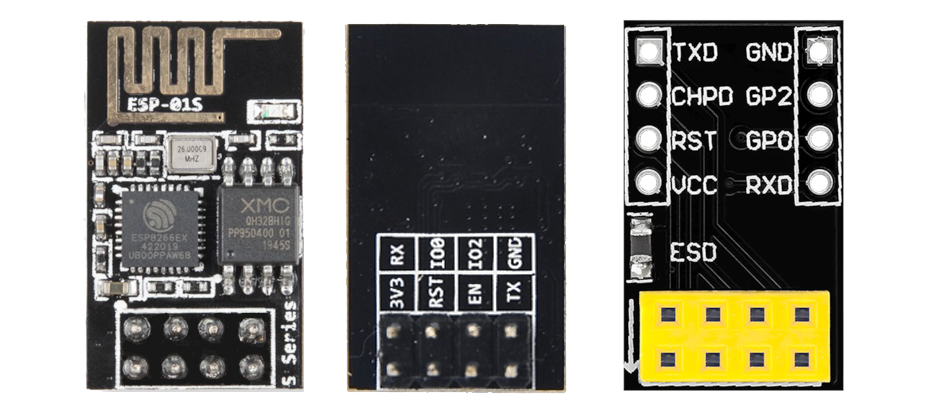
รูป: โมดูล ESP01S และโมดูล PCB Adapter
โมดูล ESP01 / ESP01S มีขาคอนเนกเตอร์เชื่อมต่อเป็นแบบ 2x4 Pin Header หากจะนำไปใช้ในการต่อวงจรบนเบรดบอร์ด ก็แนะนำให้ใช้โมดูล PCB Adapter ร่วมด้วย จะทำให้เสียบขาลงบนเบรดบอร์ดได้ง่าย แต่ถ้าไม่มี ก็ใช้วิธีการต่อสาย Jumper Wires ที่มีด้านปลายเป็นตัวผู้-ตัวเมีย (Male-Female)
การใช้งานโมดูล ESP01 / ESP01S เป็นอุปกรณ์ WiFi-to-Serial จะใช้วิธีเชื่อมต่อทาง Serial ขา TX / RX และนำไปใช้งานกับบอร์ดไมโครคอนโทรลเลอร์ที่ไม่สามารถสื่อสารด้วย Wi-Fi
การทำงานของโมดูล จะต้องมีการติดตั้งเฟิร์มแวร์ที่เรียกว่า ESP-AT ของบริษัท Espressif และเป็นซอฟต์แวร์ Open Source
ในปัจจุบัน (ขณะที่เขียนบทความ) ก็มีการแบ่งเป็นสองเวอร์ชันคือ v1.7.x และ v2.2.x ทางบริษัท Espressif ก็ได้ประกาศไว้ว่า จะไม่พัฒนาเฟิร์มแวร์ ESP-AT สำหรับชิป ESP8266 / ESP8285 อีกต่อไป (ยกเว้นการอัปเดตและแก้ไข Bug Fixes) แต่จะเน้นใช้กับชิปรุ่มใหม่กว่า เช่น ESP32 / S2 / C2 / C3 เป็นต้น
สำหรับผู้ที่ต้องการใช้โมดูลงาน ESP01 / ESP01S ที่มีหน่วยความจำแฟลช อย่างน้อย 1MB บริษัท Cytron ได้เผยแพร่ไฟล์เฟิร์มแวร์ "Cytron_ESP_AT V2.2.0.bin" (local copy) สำหรับโมดูล ESP-01S (ESP8285-based) ไว้ใน Github หากมีโมดูล ESP-01S แต่ใช้เฟิร์มแวร์เวอร์ชันเก่า และต้องการใช้เวอร์ชันใหม่ ก็สามารถดาวน์โหลดไฟล์ดังกล่าวมา แล้วใช้โปรแกรม esptool.py ในการอัปเกรดเฟิร์มแวร์ใหม่ได้
▷ บอร์ด Cytron Maker Pi Pico + ESP01S#
บอร์ด Maker Pi Pico by Cytron (Malaysia) ที่ได้มีการออกแบบมาเพื่อใช้งานร่วมกับบอร์ด Raspberry Pi RP2040 ช่วยให้ง่ายต่อการต่อวงจรรอบข้าง และหากต้องการใช้งานโมดูล ESP01 / ESP01S ก็มีคอนเนกเตอร์เป็นแบบ 2x4-pin Socket อยู่บนบอร์ดแล้ว ทำให้ง่ายต่อการเชื่อมต่อกับโมดูลดังกล่าว
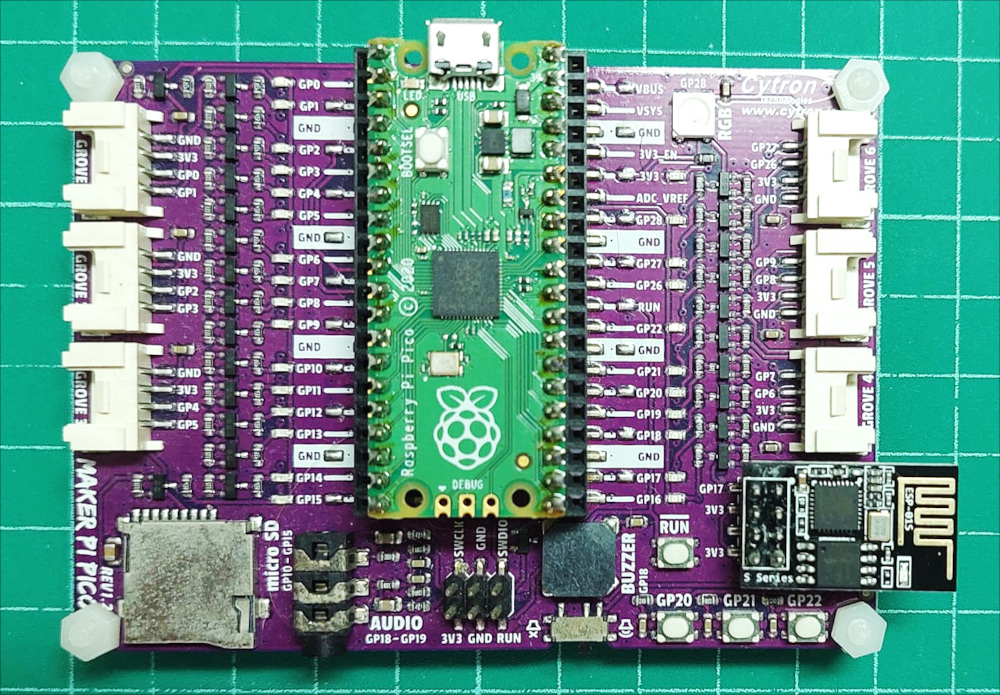
รูป: บอร์ด Maker Pi Pico v1.2.0 + ESP01S
{kind=link}
รูป: แผนผังวงจรของบอร์ด Maker Pi Pico v1.2.0 (Source: Cytron.io)
จากผังวงจรจะเห็นได้ว่า ขา TXD / RXD ของโมดูล ESP01S เชื่อมต่อกับขา GP17 / GP16 ของ Pico RP2040 ตามลำดับ
Pico GP17 (UART0_RX) <-- ESP01S TXD
Pico GP16 (UART0_TX) --> ESP01S RXD
ตัวอย่างบอร์ดไมโครคอนโทรลเลอร์ที่ใช้ชิป RP2040 และ ESP8285 หรือ ESP32-C3 เพื่อใช้ในการสื่อสาร WiFi (2.4GHz) และใช้วิธีเชื่อมต่อแบบ Serial / UART หรือ SPI ได้แก่
- บอร์ดของบริษัท Invector Labs / iLabs Electronics (Sweden)
- บอร์ดของบริษัท Seeedstudio
- บอร์ดของบรษัท LilyGo
▷ ตัวอย่าง Arduino Sketch - Serial Passthrough#
ถัดไปเป็นตัวอย่างโค้ด Arduino Sketch เพื่อทำให้บอร์ด Pico
เป็นตัวกลางเชื่อมต่อระหว่างคอมพิวเตอร์ของผู้ใช้กับโมดูล ESP01S
(มีค่า Default Serial Baudrate เท่ากับ 115200)
โดยใช้ขา UART0 TX / RX (GP16 / GP17 pins) ของชิป RP2040 สื่อสารกับโมดูล ESP01S
และตรงกับการทำงานของ Serial1 ในโค้ด Arduino Sketch
#define LED_PIN LED_BUILTIN
#define ESP_SERIAL_BAUD (115200)
#define ESP_SERIAL Serial1
#define ESP_SERIAL_TX_PIN (16)
#define ESP_SERIAL_RX_PIN (17)
//#define ESP_SERIAL Serial2
//#define ESP_SERIAL_TX_PIN (8)
//#define ESP_SERIAL_RX_PIN (9)
//#define ESP_RESET_PIN (15)
#define PACKET_SIZE (64)
char buf[ PACKET_SIZE+1 ]; // serial data buffer up to 64 bytes
void setup() {
pinMode( LED_PIN, OUTPUT );
digitalWrite( LED_PIN, LOW );
// Set baudrate for Serial (USB-CDC).
Serial.begin( 115200 );
// Set ESP Serial TX/RX pins and baudrate.
ESP_SERIAL.setTX( ESP_SERIAL_TX_PIN );
ESP_SERIAL.setRX( ESP_SERIAL_RX_PIN );
ESP_SERIAL.begin( ESP_SERIAL_BAUD );
// Wait until the USB-CDC port is open on the PC side.
while ( !Serial );
Serial.println( "Arduino RP2040 - Serial Passthrough" );
Serial.flush();
#ifdef ESP_RESET_PIN
// Reset the ESP module.
pinMode( ESP_RESET_PIN, OUTPUT );
digitalWrite( ESP_RESET_PIN, LOW );
delay(10);
digitalWrite( ESP_RESET_PIN, HIGH );
delay(100);
#endif
Serial.setTimeout( 200 );
ESP_SERIAL.setTimeout( 200 );
digitalWrite( LED_PIN, HIGH );
}
void loop() {
if ( Serial.available() ) {
size_t received = Serial.readBytes( buf, PACKET_SIZE );
if ( received > 0 ) {
// Send data received from PC Serial to ESP Serial.
ESP_SERIAL.write( buf, received );
}
}
if ( ESP_SERIAL.available() ) {
size_t received = ESP_SERIAL.readBytes( buf, PACKET_SIZE );
if ( received > 0 )
// Send data received from ESP Serial to PC Serial.
Serial.write( buf, received );
}
}
}
เมื่ออัปโหลด Arduino Sketch ไปยังบอร์ด Pico แล้วเปิด Serial Monitor
ตั้งค่า Baudrate 115200 แล้วส่งข้อความที่เป็นคำสั่ง เช่น AT ก็จะได้ข้อความตอบกลับเป็น OK
หรือถ้าส่งคำสั่ง AT+GMR ก็จะได้ข้อความตอบกลับแสดงเวอร์ชันของเฟิร์มแวร์ที่ใช้กับโมดูล ESP01S
ตามรูปตัวอย่างต่อไปนี้
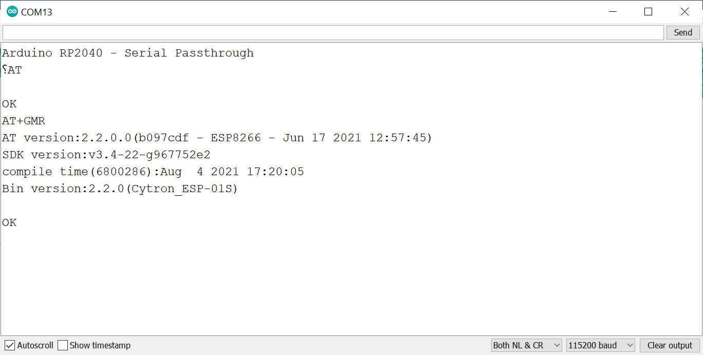
รูป: ตัวอย่างการส่งคำสั่ง ESP-AT Command และรับข้อความตอบกลับจากโมดูล ESP01S ใน Arduino Serial Monitor
ลองส่งคำสั่ง AT+UART? เพื่อตรวจสอบการตั้งค่าสำหรับ UART ของโมดูล ESP01S
หากถ้าต้องการตั้งค่า Baudrate จากเดิม 115200 ไปใช้ค่าอื่น เช่น 921600
ก็ทำคำสั่งต่อไปนี้ (จบท้ายด้วย Newline หรือ \n)
AT+UART_DEF=921600,8,1,0,0
คำสั่งนี้จะเปลี่ยนค่า Baudrate เป็น 921600 (ใช้ข้อมูลแบบ 8 บิต มี 1 Stop Bit ไม่มี Parity Bit และไม่มี Hardware Flow Control ใด ๆ) และบันทึกค่าลงในหน่วยความจำภายในชิป และจะใช้ค่านี้เมื่อมีการรีเซตหรือจ่ายไฟเลี้ยงให้โมดูลครั้งถัดไป
เมื่อสามารถเชื่อมต่อระหว่าง Pico กับ ESP01S ผ่านทาง Serial ได้แล้ว
ถัดไปเป็นการทดลองใช้งานไลบรารี WiFiEspAT
▷ การใช้งานโมดูล ESP-M3 (ESP8285) ร่วมกับบอร์ด Pico#
โมดูล ESP-M3 ใช้ชิป ESP8285 ที่ได้รวมหน่วยความจำแฟลชไว้ภายในแล้ว (มีขนาด 1MB หรือ 2MB) และสามารถใช้งานเฟิร์มแวร์ ESP-AT ได้เหมือนโมดูล ESP01S
โมดูล ESP-M3 มีความแตกต่างจาก ESP01S เช่น ผู้ใช้สามารถบัดกรีขา Pin Header แบบแถวเดียว ซึ่งมีระยะห่างขาเท่ากับ 2.54mm และมีขา GPIO มากกว่า (แม้ว่าจะมีอยู่ค่อนข้างน้อยเช่นกัน)
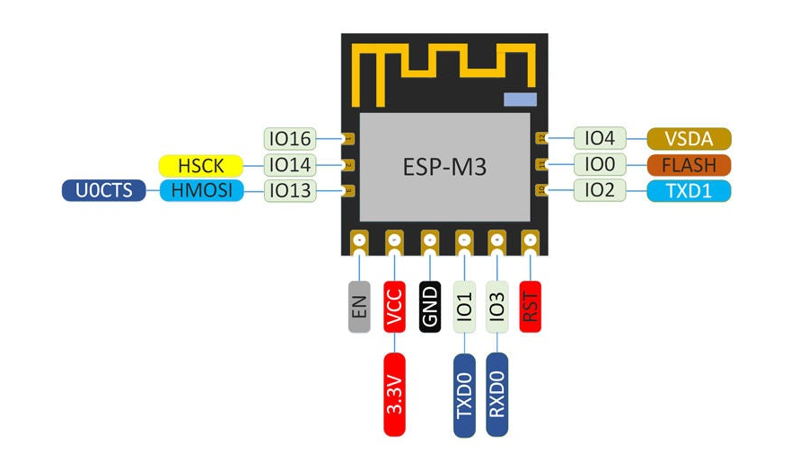
รูป: แผนผังแสดงตำแหน่งขาของโมดูล ESP-M3
▷ การใช้งานไลบรารี WiFiEspAT#
ในการใช้งานโมดูล ESP01 / ESP01S และสื่อสารโดยใช้ชุดคำสั่ง ESP-AT Command Set มีไลบรารีชื่อ WiFiEspAT ให้นำมาลองใช้งานได้สำหรับการเขียนโค้ดด้วย Arduino Sketch (ดูตัวอย่างโค้ดตัวอย่างการใช้งานไลบรารี WiFiEspAT - Examples)
ไปที่เมนู Tools->Manage Libraries.. ในหน้าต่าง Pop Up ให้ค้นหาชื่อ WiFiEspAT
แล้วเลือกติดตั้งเวอร์ชันล่าสุด
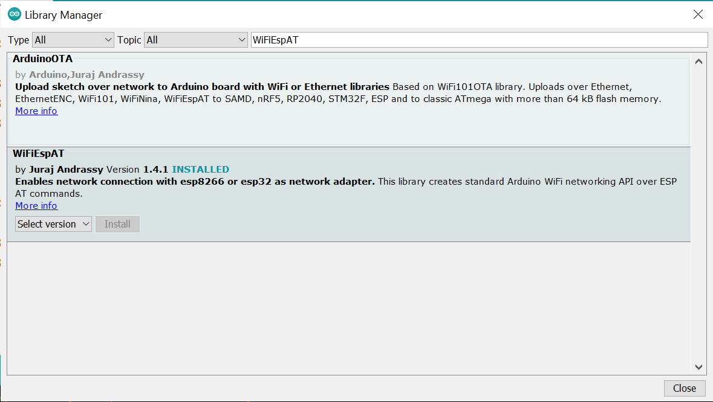
รูป: การค้นหาและติดตั้งไลบรารีใน Arduino IDE
WiFiEspAT รองรับการใช้งาน ESP-AT Firmware แบ่งเป็นสองเวอร์ชันคือ
v1.7.x และเวอร์ชันใหม่คือ 2.2.x ดังนั้นจะต้องแก้ไขไฟล์ src/util/EspAtDrvTypes.h
ก่อนใช้งานถ้าเป็นเวอร์ชันใหม่
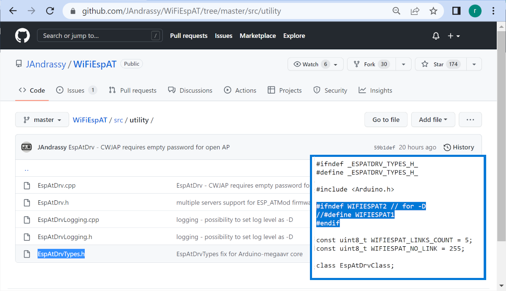
รูป: การตั้งค่าใช้งาน ESP-AT v2 สำหรับไลบรารี WiFiEspAT
เนื่องจากโค้ดตัวอย่างมีการใช้ไลบรารี Arduino Timelib เพื่อเชื่อมต่อกับ NTP (Network Time Protocol) Server และจัดการเวลาของระบบ ดังนั้นจะต้องมีการติดตั้งไลบรารีให้กับ Arduino IDE ก่อนคอมไพล์โค้ดตัวอย่าง
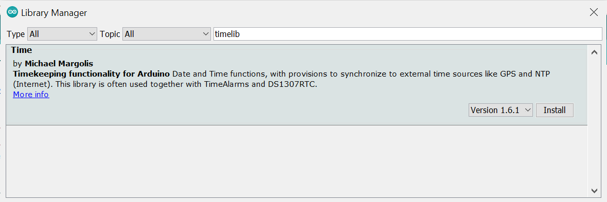
รูป: การติดตั้งไลบรารี TimeLib
โค้ดตัวอย่างสาธิตการใข้งานโมดูล ESP01S เพื่อเชื่อมต่อกับ WiFi Access Point และอ่านข้อมูลวันเวลาปัจจุบันจาก NTP Server
// Import Arduino libraries:
// - https://github.com/JAndrassy/WiFiEspAT/
// - https://github.com/PaulStoffregen/Time
#include <WiFiEspAT.h>
#include <TimeLib.h>
// This file defines the WIFI_SSID and WIFI_PASS strings.
#include "arduino_secrets.h"
#define LED_PIN LED_BUILTIN
#define ESP_SERIAL Serial1
#define ESP_SERIAL_TX_PIN (16)
#define ESP_SERIAL_RX_PIN (17)
#define ESP_SERIAL_BAUD (921600)
#define NTP_SERVER "us.pool.ntp.org"
#define SERIAL_TIMEOUT_DEFAULT (1000)
bool is_wifi_serial_ready() {
bool ready_flag = false;
int timeout = 10;
String rdy = "";
ESP_SERIAL.setTimeout( 100 );
while( timeout-- ) {
ESP_SERIAL.println( "AT" );
rdy = ESP_SERIAL.readStringUntil( '\n' );
if ( rdy.startsWith( "OK" ) ) {
ready_flag = true;
break;
}
}
ESP_SERIAL.setTimeout( SERIAL_TIMEOUT_DEFAULT );
return ready_flag;
}
void toggle_led( int delay_ms = 500 ) {
digitalWrite( LED_PIN, !digitalRead( LED_PIN ) );
delay( delay_ms );
}
bool connect_ntp( int8_t timezone ) {
int cnt = 20;
WiFi.sntp( NTP_SERVER );
Serial.println( "Waiting for NTP" );
while ( WiFi.getTime() < SECS_YR_2000 && cnt-- ) {
toggle_led( 1000 );
Serial.print( '.' );
}
Serial.println();
if (cnt > 0) {
setTime( WiFi.getTime() + (SECS_PER_HOUR * timezone) );
return true;
}
return false;
}
void setup() {
pinMode( LED_PIN, OUTPUT );
// Set baudrate and the TX / RX pins for ESP Serial.
ESP_SERIAL.setTX( ESP_SERIAL_TX_PIN );
ESP_SERIAL.setRX( ESP_SERIAL_RX_PIN );
ESP_SERIAL.begin( ESP_SERIAL_BAUD );
ESP_SERIAL.flush();
// Set baud rate for Serial.
Serial.begin( 115200 );
while (!Serial) ; // Wait until the USB-CDC port is open.
// Show the version of Arduino RP2040 Core.
Serial.printf( "Arduino Pico Core v%s\n", ARDUINO_PICO_VERSION_STR );
// Check whether the ESP module is ready.
Serial.printf( "ESP module: %s\n",
is_wifi_serial_ready() ? "ready" : "timeout" );
// Initialize WiFi and use ESP Serial for serial communication.
WiFi.init( ESP_SERIAL );
if ( WiFi.status() == WL_NO_MODULE ) {
Serial.println( "Communication with ESP module failed!" );
while (1) { toggle_led( 100 ); yield(); }
}
// Get the firmware versionof the ESP module.
String s = WiFi.firmwareVersion();
Serial.printf( "WiFiEspAT library version: %s\n", s.c_str() );
// Show the MAC address of the ESP module
byte mac[6];
WiFi.macAddress( mac );
Serial.printf( "MAC: %02x:%02x:%02x:%02x:%02x:%02x\n",
mac[0],mac[1],mac[2],mac[3],mac[4],mac[5] );
// Clear existing WiFi connection
WiFi.disconnect();
// Set the following WiFi connection as persistent
WiFi.setPersistent();
// Disable default automatic start of persistent AP at startup.
WiFi.endAP();
// Try to connect to the WiFi AP
int status = WiFi.begin( WIFI_SSID, WIFI_PASS );
Serial.println( "Waiting for connection to WiFi" );
int cnt = 20;
while ( WiFi.status() != WL_CONNECTED && --cnt ) {
toggle_led( 500 );
Serial.print('.');
}
if ( WiFi.status() == WL_CONNECTED ) {
// Show the local IP address.
IPAddress ip = WiFi.localIP();
Serial.println( ip );
}
// Try to connect the NTP server
if ( !connect_ntp( 7 /*UTC+7*/ ) ) {
Serial.println( "NTP server connection failed!" );
}
}
void loop() {
static char buf[32];
sprintf( buf, "Now: %02d-%02d-%02d %02d:%02d:%02d",
year(), month(), day(), hour(), minute(), second() );
Serial.println( buf );
delay(1000);
}
เมื่อคอมไพล์โค้ดตัวอย่างและอัปโหลดไปยังบอร์ดทดลองแล้ว และโปรแกรมทำงานได้อย่างถูกต้อง จะได้รับข้อความเอาต์พุตตามรูปแบบต่อไปนี้
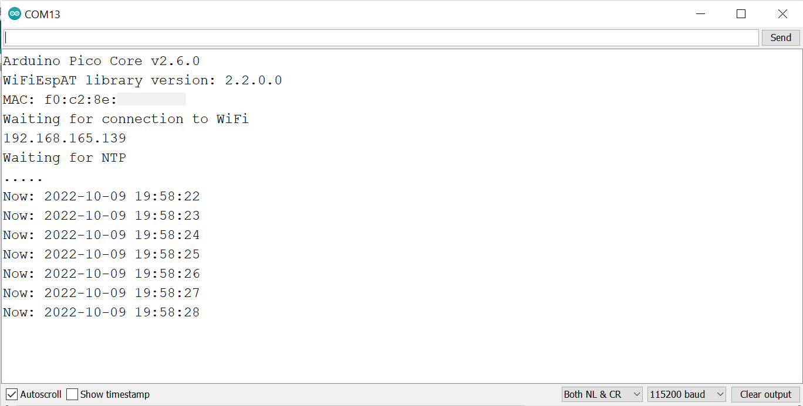
รูป: ข้อความเอาต์พุตใน Arduino Serial Monitor ที่ไดัรับจากบอร์ด Pico
▷ การส่งข้อความด้วยโพรโทคอล MQTT#
ถัดไปเป็นตัวอย่างการใช้ไลบรารี PubSubClient
เพื่อใช้งานโพรโทคอล MQTT v3.1.1
ในการส่งข้อความทุก ๆ 5 วินาที ไปยัง Public MQTT Broker
เช่น test.mosquitto.org พอร์ตหมายเลข 1883
และใช้ QoS=0 ในการส่งข้อความ
// Import Arduino libraries:
// - https://github.com/JAndrassy/WiFiEspAT/
// - https://github.com/knolleary/pubsubclient
#define WIFIESPAT2
#include <WiFiEspAT.h>
#include <WiFiClient.h>
#include <PubSubClient.h>
// This file defines the WIFI_SSID and WIFI_PASS strings.
#include "arduino_secrets.h"
#define LED_PIN LED_BUILTIN
#if 0
#define ESP_SERIAL Serial1
#define ESP_SERIAL_TX_PIN (16)
#define ESP_SERIAL_RX_PIN (17)
#define ESP_SERIAL_BAUD (115200)
#else // use RP2040 Serial2 port
#define ESP_SERIAL Serial2
#define ESP_SERIAL_TX_PIN (8)
#define ESP_SERIAL_RX_PIN (9)
#define ESP_SERIAL_BAUD (115200) // 921600
#define ESP_RESET_PIN (15)
#endif
#if !defined(ESP_RESET_PIN)
#define ESP_RESET_PIN (-1)
#endif
#define SERIAL_TIMEOUT_DEFAULT (1000)
#define MQTT_BROKER "test.mosquitto.org"
#define MQTT_PORT 1883
#define MQTT_PUB_TOPIC "test/1234/msg"
WiFiClient espClient;
PubSubClient client(espClient);
bool is_wifi_serial_ready() {
bool ready_flag = false;
int timeout = 10;
String rdy = "";
ESP_SERIAL.setTimeout( 100 );
while( timeout-- ) {
ESP_SERIAL.println( "AT" );
rdy = ESP_SERIAL.readStringUntil( '\n' );
if ( rdy.startsWith( "OK" ) ) {
ready_flag = true;
break;
}
}
ESP_SERIAL.setTimeout( SERIAL_TIMEOUT_DEFAULT );
return ready_flag;
}
void toggle_led( int delay_ms = 500 ) {
digitalWrite( LED_PIN, !digitalRead( LED_PIN ) );
delay( delay_ms );
}
void setup() {
pinMode( LED_PIN, OUTPUT );
// Set baudrate and the TX / RX pins for ESP Serial.
ESP_SERIAL.setTX( ESP_SERIAL_TX_PIN );
ESP_SERIAL.setRX( ESP_SERIAL_RX_PIN );
ESP_SERIAL.begin( ESP_SERIAL_BAUD );
ESP_SERIAL.flush();
// Set baud rate for Serial.
Serial.begin( 115200 );
while (!Serial) ; // Wait until the USB-CDC port is open.
// Show the version of Arduino RP2040 Core.
Serial.printf( "Arduino Pico Core v%s\n", ARDUINO_PICO_VERSION_STR );
// Initialize WiFi and use ESP Serial for serial communication.
WiFi.init( ESP_SERIAL, ESP_RESET_PIN );
// Check whether the ESP module is ready.
Serial.printf( "ESP module: %s\n",
is_wifi_serial_ready() ? "ready" : "timeout" );
if ( WiFi.status() == WL_NO_MODULE ) {
Serial.println( "Communication with ESP module failed!" );
while (1) { toggle_led( 100 ); yield(); }
}
// Get the firmware versionof the ESP module.
String s = WiFi.firmwareVersion();
Serial.printf( "ESP-AT firmware version: %s\n", s.c_str() );
// Show the MAC address of the ESP module
byte mac[6];
WiFi.macAddress( mac );
Serial.printf( "MAC: %02x:%02x:%02x:%02x:%02x:%02x\n",
mac[0],mac[1],mac[2],mac[3],mac[4],mac[5] );
// Clear existing WiFi connection
WiFi.disconnect();
// Set the following WiFi connection as persistent
WiFi.setPersistent();
// Disable default automatic start of persistent AP at startup.
WiFi.endAP();
// Try to connect to the WiFi AP
int status = WiFi.begin( WIFI_SSID, WIFI_PASS );
Serial.println( "Waiting for connection to WiFi" );
Serial.flush();
int cnt = 10;
while ( WiFi.status() != WL_CONNECTED && --cnt ) {
toggle_led( 500 );
Serial.print('.');
}
Serial.flush();
if ( WiFi.status() == WL_CONNECTED ) {
// Show the local IP address.
IPAddress ip = WiFi.localIP();
Serial.println( ip );
}
WiFi.sleepMode( WIFI_NONE_SLEEP );
// Set MQTT server and port.
client.setServer( MQTT_BROKER, MQTT_PORT );
// Set MQTT socket timeout (in seconds).
client.setSocketTimeout(1);
// Set MQTT keep alive (in seconds)
client.setKeepAlive(60);
}
void loop() {
static uint32_t ts = 0;
static uint32_t count = 0;
if ( !client.connected() ) {
if ( client.connect( "arduino_rp2040_client" ) ) {
Serial.println( "Mosquitto broker connected.." );
}
else {
Serial.println( "Mosquitto broker is not connected.." );
delay(1000);
return;
}
}
client.loop();
if ( millis() - ts >= 5000 ) { // Send MQTT message every 5 seconds.
char message[64];
ts = millis();
sprintf( message, "{count: %d}", ++count );
int result = client.publish( MQTT_PUB_TOPIC, message );
Serial.printf( "published: '%s' (%s)\n",
message, result ? "ok" : "failed" );
}
}
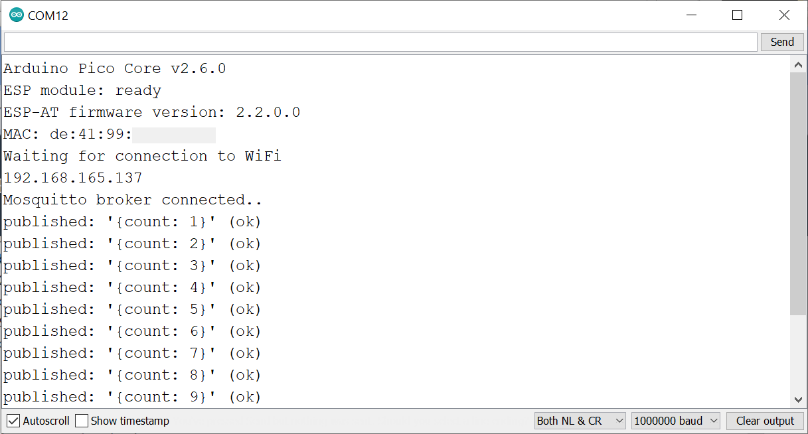
รูป: ตัวอย่างข้อความเอาต์พุตใน Arduino Serial Monitor แสดงสถานะการทำงานของโค้ดตัวอย่าง
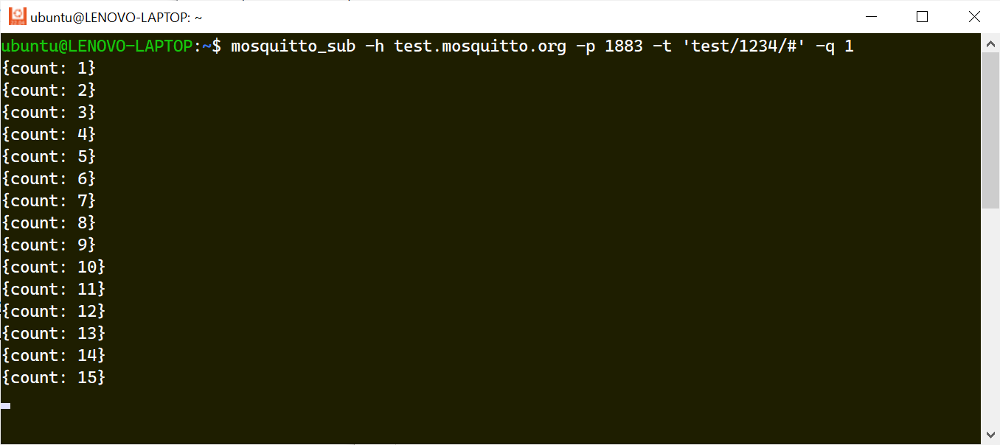
รูป: ตัวอย่างการทำคำสั่ง mosquitto_sub ใน Ubuntu (WSL2) เพื่อสมัครรับข้อความจาก
MQTT Broker ภายใต้หัวข้อ (MQTT Topic) ที่กำหนดไว้ ในขณะที่บอร์ด Pico
กำลังส่งข้อความไปยัง MQTT Broker
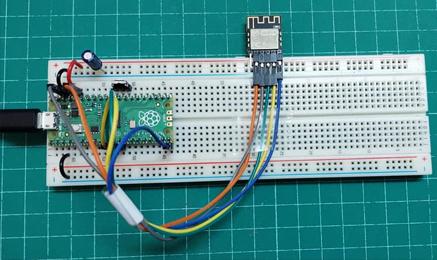
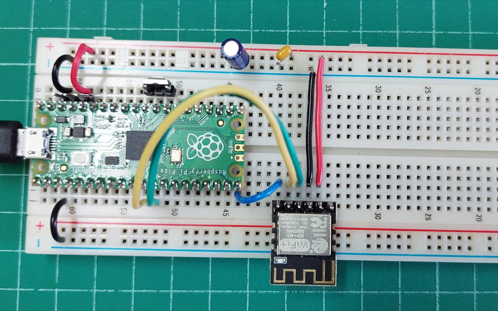
รูป: การใช้งานบอร์ด Raspberry Pi Pico (เลือกใช้ขา UART2 TX / RX ของ RP2040) ร่วมกับโมดูล ESP-M3 (ใช้ค่า Baudrate 115200) และใช้แรงดันไฟเลี้ยง +3.3V จากบอร์ด Pico
ข้อสังเกต: สำหรับการจ่ายแรงดันไฟเลี้ยงที่ขา +3.3V กับ GND ให้กับโมดูล ESP01 หรือ ESP-M3 แนะนำให้ต่อตัวเก็บประจุไฟฟ้าเพิ่ม (เช่น ขนาด 10uF) คร่อมที่ขาทั้งสองด้วย
▷ กล่าวสรุป#
บทความนี้นำเสนอการใช้งานบอร์ดไมโครคอนโทรลเลอร์ Raspberry Pi Pico - RP2040 ร่วมกับโมดูล ESP01S ที่ใช้ชิป ESP8285 ทำหน้าที่เป็นโมดูล WiFi-to-Serial และเขียนโปรแกรมทดลองการใช้งานด้วย Arduino RP2040 Core ร่วมกับไลบรารี WiFiEspAT มีการสาธิตการเชื่อมต่อกับ NTP Server และส่งข้อความไปยัง MQTT Broker เป็นต้น
This work is licensed under a Creative Commons Attribution-ShareAlike 4.0 International License.
Created: 2022-10-09 | Last Updated: 2022-11-07